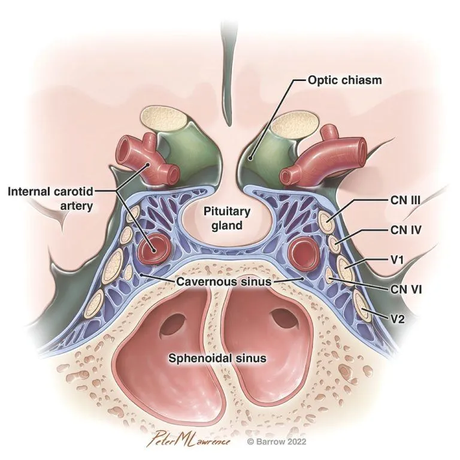

Location of the Pituitary Gland
The pituitary gland is located at the base of the brain, behind the bridge of the nose. It is about one-half inch (1.25 cm) in diameter. The pituitary gland rests within a hollowed out area of the sphenoid bone called the sella turcica.

The arrow indicates the location of the pituitary gland at the base of the brain.

The pituitary gland sits below the optic chiasm—the point where the fibers of the optic nerves cross each other—and between the internal carotid arteries. The sphenoid sinus, which is used to access the pituitary gland during transsphenoidal surgery, is below the gland.
Function of the Pituitary Gland
The pituitary gland is referred to as the “master gland” because it monitors and regulates many bodily functions through the hormones that it produces, including:
Growth and sexual/reproductive development and function
Glands (thyroid gland, adrenal glands, and gonads)
Organs (kidneys, uterus, and breasts)
The pituitary gland is connected by a stalk to a part of the brain called the hypothalamus. Together, the brain and pituitary gland form the neuroendocrine system. This system constantly monitors glands and organs to determine whether to send or to stop the chemical messengers (hormones) that control their functions.
Learn more about the Barrow Pituitary Center what we treat, treatments/procedures and to find a Pituitary specialist.